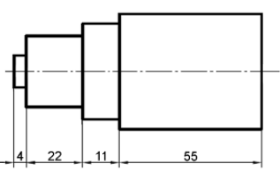
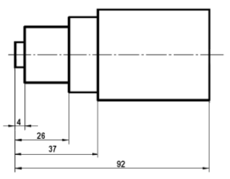

Imagina que estás diseñando un objeto o una pieza, como una mesa o una estructura metálica, y necesitas proporcionar a un fabricante o a otros profesionales las medidas exactas y detalles específicos para que puedan crear el objeto de manera precisa. Aquí es donde entra en juego la acotación. Es como darle al dibujo una "etiqueta" que le dice a cualquiera que lo vea las medidas exactas de cada parte y cómo deben ensamblarse.
Imagina que estás diseñando un objeto o una pieza, como una mesa o una estructura metálica, y necesitas proporcionar a un fabricante o a otros profesionales las medidas exactas y detalles específicos para que puedan crear el objeto de manera precisa.
Aquí es donde entra en juego la acotación.
Es como darle al dibujo una "etiqueta" que le dice a cualquiera que lo vea las medidas exactas de cada parte y cómo deben ensamblarse.
Líneas de cota: Estas son las líneas utilizadas para indicar las dimensiones de la pieza que se está acotando. Cada línea de cota se coloca paralelamente a la arista correspondiente y se ubica en el exterior, generalmente a una distancia de 8 mm de la figura.
Líneas auxiliares de cota: Estas líneas tienen la función de delimitar con precisión las líneas de cota. Son perpendiculares a las líneas de cota y sobresalen aproximadamente 2 mm a ambos lados de estas líneas. Es importante evitar que las líneas auxiliares se crucen entre sí.
Terminales de cota (flechas, puntos o trazos): Los terminales de cota marcan el final de las líneas de cota y proporcionan claridad en la indicación de las dimensiones. Si el espacio lo permite, se suelen utilizar flechas con un ángulo de 15 grados en los extremos de las líneas de cota. En caso contrario, se utilizan trazos de 45 grados o puntos.
Números: Los números se utilizan para indicar las dimensiones reales de la pieza en milímetros (o cualquier otra unidad, en caso de ser diferente). Estos números se colocan encima de las líneas de cota y se centran adecuadamente.
Simbología: En ocasiones, se recurre a símbolos para una mayor claridad en la acotación. Algunos ejemplos incluyen "R" para indicar el radio y "Ø" para el diámetro.
Es esencial seguir las siguientes pautas al llevar a cabo la acotación:
Indicar todas las dimensiones necesarias: Asegúrate de incluir todas las dimensiones esenciales que se requieren para reproducir con precisión la figura o el objeto en el dibujo.
Evitar repeticiones: Para evitar confusiones, no repitas las medidas innecesariamente. Utiliza la menor cantidad posible de dimensiones, enfocándote en las más relevantes.
Consistencia en la unidad: Emplea siempre la misma unidad de medida, la cual debe ser claramente especificada en el cajetín donde se exhiben las unidades, como "cm" o "mm". Esto garantiza que todas las dimensiones sean coherentes y comprensibles.
Representar las dimensiones reales: Asegúrate de que las dimensiones que proporcionas en el dibujo reflejen las medidas reales del objeto, lo que es esencial para la fabricación y la comprensión precisa del diseño.
Podemos realizar principalmente tres tipos de acotaciones :
a) Acotación en serie, cuando ponemos las cotas una a continuación de la otra.

b) Acotación en paralelo, empleando la misma línea auxiliar de cota como referencia para realizar las distintas cotas, colocando todas las cotas paralelas entre si.

c) Acotación combinada, combinando la acotación en serie y en paralelo.
1. Líneas de cota: Se utilizan para indicar las dimensiones de la pieza. Son paralelas a la arista correspondiente y se ubican a 8 mm de la figura.
2. Líneas auxiliares de cota: Delimitan las líneas de cota y son perpendiculares a ellas. Se extienden aproximadamente 2 mm a ambos lados sin cruzarse.
3. Terminales de cota: Marcadores al final de las líneas de cota para dar claridad. Pueden ser flechas, trazos o puntos.
4. Números: Indican las dimensiones reales de la pieza en milímetros u otra unidad relevante. Se colocan encima de las líneas de cota.
5. Simbología: En ocasiones, se utilizan símbolos como "R" para radio y "Ø" para diámetro.
Es importante seguir pautas como indicar todas las dimensiones necesarias, evitar repeticiones innecesarias, usar una unidad de medida consistente y representar las dimensiones reales.